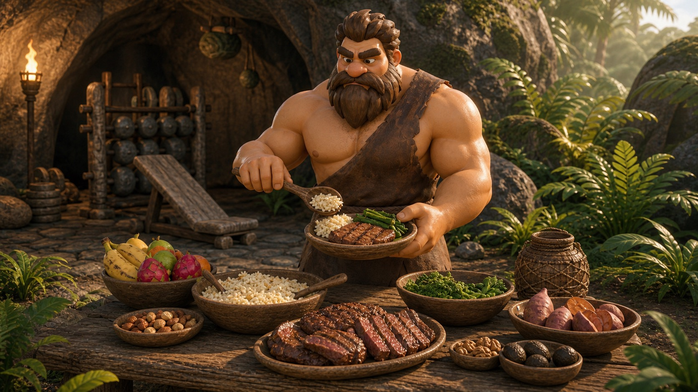

Bulk, Cut, or Recomp? The Skinny-Fat Beginner Guide
A plain-English decision guide for building muscle, managing fat loss, and avoiding panic pivots.
Best forNew liftersTimeline8-week reviewPriorityTraining consistency
Most beginners earn the right to decide by lifting consistently first.
If you feel stuck between too small to cut and too soft to bulk, you are not broken. You are probably under-trained. That means your first priority is getting stronger with enough protein and a stable routine.
For many beginners, recomposition is a sensible starting point: eat around maintenance, lift hard enough to progress, and reassess after eight weeks instead of changing direction every Monday.
DefaultMaintenance calories plus lifting.
ProteinAim for a consistent daily target.
ReviewUse photos, strength, and waist trend.
A Careful Starting Point
If you are a minor, have a history of disordered eating, have medical restrictions, or feel anxious around food tracking, get support from a qualified professional. Body composition work should not harm your health or relationship with food.
The Decision Rule
Choose a small deficit if fat loss is the clear health or comfort priority. Choose a lean surplus if you are already lean and struggling to gain strength. Choose recomp if you are unsure and new to lifting.
Decision cards
Bulk, Cut, or Recomp Choices
Recomp
Maintenance + Lifting
Hold calories roughly steady while lifting progressively and hitting protein.
Best unsure default
Cut
Small Deficit
Use a modest deficit when losing fat clearly matters more than fast muscle gain.
If fat loss is priority

Bulk
Lean Surplus
Use a small surplus when you are lean, training hard, and need fuel to grow.
If already lean
Nutrition
Protein Target
Protein is the easiest nutrition lever to make lifting work better.
Daily anchor
Tracking
Photos and Measurements
Use multiple signals because scale weight alone can lie to new lifters.
Weekly
Review
8-Week Reassessment
Give the plan enough time to produce information before choosing bulk, cut, or recomp again.
Every 8 weeks
Nutrition Direction
Maintenance + LiftingBest unsure default
Small DeficitIf fat loss is priority
Lean SurplusIf already lean
Tracking Loop
Protein TargetDaily anchor
Photos and MeasurementsWeekly
8-Week ReassessmentEvery 8 weeks
Keep the Decision Stable
Torq Tribe helps you track workouts and progress trends, so you can reassess from evidence instead of mood.